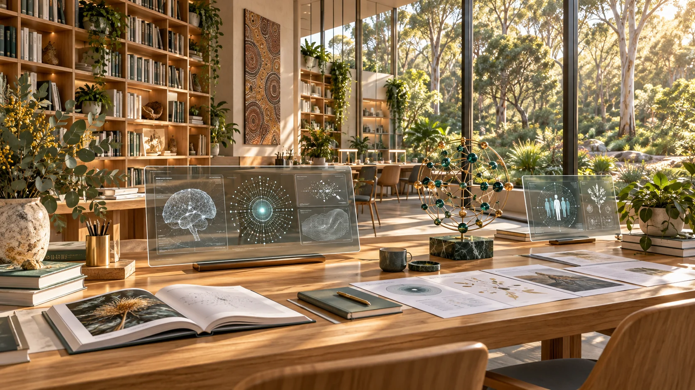

GenAI concept artworkSource history
The complete source archive and the development of the invitation: 31 documents, 15 supplied websites and the further sources cited in the proposal.
How the proposal developed
This invitation grew from Luke Nathan Hayes's project documents, public websites and a working conversation about how to bring them together for the Anglican Diocese. The source archive below preserves the documents and connects readers with the wider projects. This account records the choices that shaped the finished invitation.
Starting with a gift of care
The starting request was to invite the Diocese to gift 82 Claytons Road, Amity, to a proposed Straddie Sovereign Wealth Fund and partner in dementia support, aged care and longevity research. The fund is to be established. The opportunity connects a particular place with a larger ambition: community wealth that grows through care, learning and useful service.
Luke's paid title search, recorded in the supplied property research, confirms ownership by The Corporation of the Synod of the Diocese of Brisbane. The Diocese's own published history records an Amity site bequeathed for aged care, where the intended care project did not proceed. The proposal developed a case for carrying that generosity forward, with the original donor documents providing the precise terms of the earlier gift.
Bringing the larger vision into focus
The early material includes planning ideas and thought experiments that sometimes differ. Luke identified the September 2026 UNGA81 document as the latest account of the wider vision. It became the main point of reference for connecting GAJRA Earth, Aura of Intelligence, human and AI alignment, community participation and Joyful Responsible Abundance.
The invitation introduces those ideas for readers meeting them for the first time. The earlier documents remain available in full so readers can follow the development of the thinking alongside the current proposal.
Inviting people to shape the partnership
The wording developed towards an invitation that prospective partners can help shape. It recognises Indigenous sovereignty and Quandamooka Country while approaching organisations through their actual roles in local care, health, culture and wellbeing.
The proposed opening conversation names NSI Housing, Yulu-Burri-Ba and Minjerribah Moorgumpin Elders-in-Council, alongside interested Elders and families. Discussion of QYAC and native title helped clarify the importance of choosing appropriate participants for the particular property and care partnership. The invitation leaves room for those participants to identify further relationships and the process they would like to follow.
The practical beginning is a conversation about shared purpose and contributions. Luke brings the vision, project development and convening work; prospective partners are invited to help identify and support the next steps. An earlier suggestion of a funded feasibility stage was removed as an assumed starting requirement.
Giving Aura a clear, meaningful introduction
Further Aura design and dementia documents deepened the account of Aura Geode, Aura Genesis and Aura of Intelligence. Luke described the central idea as a digital aura of a person's life and personality: something designed and grown into a form that AI and computers can work with and people can understand.
The proposal connects that developing representation with an avatar for health, work, life planning and exploratory simulations. It introduces the physical and immersive research possibilities of Aura Geode and the development of personal understanding through Aura Genesis. Detailed geometry and vector-field terminology were left in the background material so the invitation could explain the purpose clearly.
Connecting memory, care and research
The additional dementia sources brought together life stories, personal preferences, familiar cues, assistive systems and a clinical research pathway. Memory palaces were included as a concept for preserving access to familiar rooms, objects and location-based memories before, during and after a move into aged care or another home.
The finished proposal presents these as possibilities to develop and investigate. Published clinical research and the relevant research frameworks are linked separately, allowing readers to distinguish design concepts from findings in existing studies.
Establishing the current C-hour direction
Luke explicitly rejected attempts in earlier documents to give the C-hour a monetary equivalent. The current direction is a contribution model without monetary equivalence, seeking a specific legal carve-out and possibly a temporary tax exemption for a Straddie pilot.
The purpose is to revive participation in useful community work, including through playful recognition and youth involvement. Luke's official Submission No. 2 to the federal Inquiry into Local Government Funding and Fiscal Sustainability is linked as part of the policy history. Earlier monetary formulations in the archive are superseded by the direction stated in the current proposal.
Connecting learning, work and the wider network
Ready Sustainable Employment and Training Cooperative is introduced in full as Ready S.E.T. Co-op: a play on “ready, set, go”. Its proposed location is 9 Ballow Road, Dunwich. The invitation connects learners, mentors, workplaces, community projects and useful shared resources.
Luke's sole trader business, Strange but True: tech, art and ideas that'll help, is distinguished from the proposed cooperative. The Community Ledger provides websites for related community thought experiments and designs. The wider source collection connects these with Minjerribah proposals, Oceania cooperation, Grain by Grain, Project Atlas and opportunities for work experience.
Australia's next four total solar eclipses and the Brisbane 2032 Olympic and Paralympic Games provide shared occasions for science, creativity, volunteering and intergenerational learning.
Shaping the document and the website
The document was refined to eleven pages: a formal title page, nine pages of content and a final references page. Repetition, assumed knowledge and unnecessarily defensive language were removed in favour of a clear, hopeful invitation grounded in the project's purpose. The PDF cover uses typography and layout without an image.
After approval of the proposal, the website was requested as a more visual, multi-page presentation preserving its text word for word. Generated concept artwork, a generated favicon, source documents, linked references, navigation and the Strange But True licence were added.
The property imagery was corrected to reflect a landlocked site, one road and a wooded setting without ocean or bay views. Tower gardens were included as part of the future concept imagery. The supplied property maps retain their original attribution and are presented separately from generated artwork.
Opening the complete source trail
Follow-up review identified that readers needed direct access to the title-search research and the UNGA81 document within references 1 and 3, along with the other named documents. Those reference links were added to both the website and the eleven-page PDF.
The archive was then expanded in its presentation to show all 31 source documents and all 15 distinct websites supplied during the conversation, together with the additional sources cited in the proposal. This development history accompanies that complete source archive. Original document files are preserved byte for byte, with checksums available in the repository.
All 31 source documents
Original documents supplied for the proposal, including the property research PDF. Select a title to open the original file, or use the searchable document library.
- Project Proposal Anglican Church PartnershipMD · 31 KB
- 82 Claytons Road Amity, MinjerribahMD · 103 KB
- Straddie Sovereign Wealth Fund & “Civilisation of Sand” – Research Brief (-4m)MD · 95 KB
- Indigenous Deals and Sovereign WealthMD · 36 KB
- Strategic Plan National Deployment of the Aura Geode EcosystemMD · 63 KB
- Rapid Deployment Strategies for a 2-ATA HBOT Unit (Aura Geode Integration)MD · 38 KB
- Project Aura Geode The Alchemical Genesis of a Regenerative CivilizationMD · 71 KB
- AURA GEODE to MACROMD · 99 KB
- Local Government Funding Inquiry SubmissionMD · 36 KB
- Oceania Health and AI Surge PlanMD · 48 KB
- Health-Tech Cooperative Business PlanMD · 62 KB
- Aged Care Act Adaptation & Health-Tech PlanMD · 49 KB
- health-challenge-statementPDF · 360 KB
- Architectural Blueprint for OceaniaPDF · 523 KB
- Queensland Olympic Earn-to-Heal PilotPDF · 273 KB
- Queenslands Heart-First Ai Surge PlanPDF · 278 KB
- UNGA81 Joyful Responsible Abundance RefinedPDF · 106 KB
- Australian C-Hour Legislative StrategyPDF · 583 KB
- Clinical Research Path for Aura of Dementia (1)PDF · 313 KB
- Fiji Australia Vuvale Union Submission Luke Nathan Hayes 2026DOCX · 52 KB
- Ocean of Peace Alliance Veitacini Treaty Submission Luke Nathan Hayes 2026DOCX · 40 KB
- Senate AI and Data Centres Submission Luke Nathan Hayes 2026DOCX · 38 KB
- A Fair Go for the AI Age Postcode-Level Sovereign Compute as Shared National InfrastructureDOCX · 43 KB
- SETCo 2026 Pitch Plan RevisionMD · 30 KB
- 10 Companies All At OnceMD · 5 KB
- Blend Aura to UnityDOCX · 6610 KB
- Open Source Dementia Care System DevelopmentMD · 74 KB
- Clinical Research Path for Aura of DementiaMD · 73 KB
- Business Plan Aura of Intelligence for Dementia CareMD · 6 KB
- Aura Oi for Dementia SufferersMD · 6 KB
- 82 Claytons Road Amity, MinjerribahPDF · 4186 KB
All 15 supplied websites
The project websites shared during development, with repeated links listed once.
- Minjerribah multi-site network ↗
- Ageing and longevity ↗
- UNGA81 invitation ↗
- Oceania healthy co-ops ↗
- Grain by Grain documentary ↗
- GAJRA Earth Infinity ↗
- GAJRA Earth, Space and AI Summit ↗
- GAJRA Earth Claude build ↗
- Project Atlas ↗
- Luke’s world of work experience ↗
- Aura of Intelligence ↗
- Ready S.E.T. Co-op cultural intelligence node ↗
- Aura Matrix Studio ↗
- Ready S.E.T. Co-op Trust Hub ↗
- Strange but True Community Ledger ↗
Further sources cited in the proposal
Published research, organisations, official guidance and additional project pages. The numbered references explain how each supports the invitation.
- The story of the little church that could ↗
- vision, mission and values ↗
- contact details ↗
- about us ↗
- NSI Housing ↗
- Yulu-Burri-Ba ↗
- Minjerribah Moorgumpin Elders-in-Council ↗
- ethical conduct in research with Aboriginal and Torres Strait Islander Peoples and communities ↗
- Aura Builder ↗
- Avatar Builder ↗
- life planning ↗
- memory palaces ↗
- Hadanny et al. (2020) ↗
- Benari et al. (2025) ↗
- Brodaty et al. (2025) ↗
- National Statement on Ethical Conduct in Human Research ↗
- Australian clinical trial handbook ↗
- Submission No. 2, Inquiry into Local Government Funding and Fiscal Sustainability ↗
- GSTR 2003/14 on barter schemes ↗
- proposed 9 Ballow Road base ↗
- Australian eclipse sequence ↗
- future eclipses ↗
- Brisbane 2032 Olympic and Paralympic Games ↗